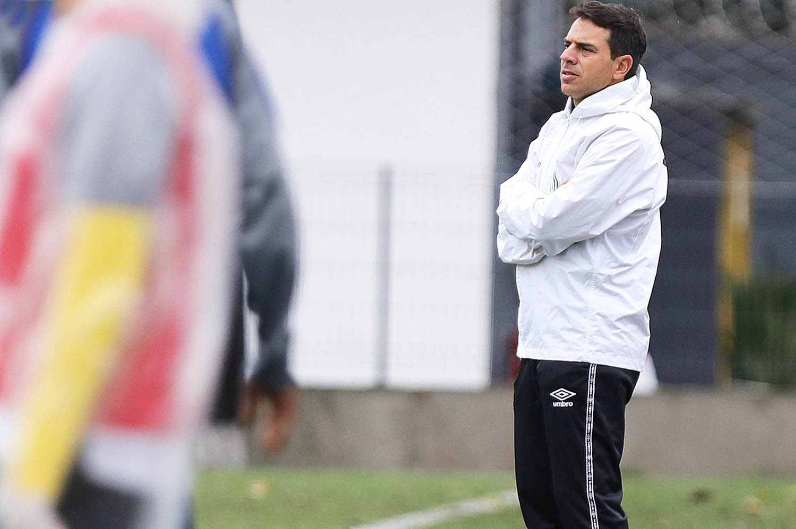
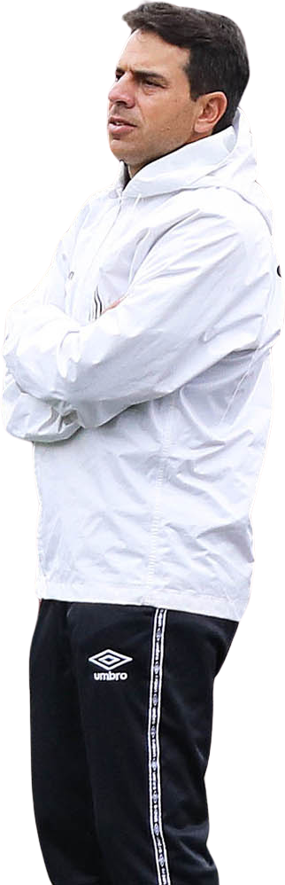

<!doctype html><html lang="pt-BR"><meta charset="utf-8"><script>if(location.search.includes("export"))document.documentElement.classList.add("preview-static")</script><script>if(new URLSearchParams(location.search).has("embedded"))document.documentElement.classList.add("embedded")</script><meta name="viewport" content="width=device-width"><title>Gabriel Bussinger | Dados pessoais</title><style>
  /* Filosofia de trabalho, Gabriel Bussinger: identidade em identidade.md */
  @property --luz{syntax:"<percentage>";inherits:true;initial-value:-30%}
  :root{
    --noite:#001d35;        /* azul-marinho dominante (paleta do cliente, 2026-11-04) */
    --ciano:#3affe7;        /* aqua: o destaque único */
    --ciano-fundo:#07475C;
    --fundo-luz:#06325A;    /* brilho atrás dele */
    --giz:#EEEEEE;
    --linha:#EEEEEEA6; /* o claro a 65%, para texto de apoio */
    --grafite:#1B2126; /* chão abaixo do meio-campo e moldura */
    --display:"League Gothic","Arial Narrow",sans-serif;
    --palavra:"Smooch Sans","League Gothic","Arial Narrow",sans-serif;
    --texto:"Archivo",Arial,sans-serif;
    --margem:96px;
    /* vidro */
    --vidro:linear-gradient(155deg,#ffffff1f,#ffffff08 45%,#3affe70d);
    --vidro-borda:#ffffff2e;
    --vidro-brilho:inset 0 1px 0 #ffffff40,inset 0 -1px 0 #ffffff0d;
  }
  *{margin:0;padding:0;box-sizing:border-box}
  html,body{background:var(--grafite);height:100%}
  body{overflow:hidden}
  .palco{position:fixed;inset:0;display:grid;place-items:center}
  .export .palco{position:static;display:block}

  .slide{
    position:absolute;left:50%;top:50%;width:1920px;height:1080px;overflow:hidden;flex:none;display:none;
    transform-origin:center;color:var(--giz);font-family:var(--texto);
  }
  .slide.ativo{display:block}
  .capa{
    /* Estádio à noite, gerado por ferramentas/estadio.py; o gradiente escurece o topo para o cabeçalho */
    background:
      linear-gradient(180deg,#00060fcc 0%,#00060f00 22%),
      url(assets/estadio.jpg) center/cover no-repeat,
      #000a16;
  }
  .export .slide{position:relative;left:auto;top:auto;transform:none!important}
  .export *{transition:none!important}


  /* Topo */
  .topo{position:absolute;z-index:4;top:38px;left:var(--margem);right:var(--margem);display:flex;justify-content:space-between;align-items:center}
  .topo p{font-size:17px;line-height:1.35;color:var(--linha)}
  .topo p b{display:block;font-weight:600;color:var(--giz)}

  /* Seletor de idiomas, em vidro */
  .idiomas{display:flex;gap:4px;padding:5px;border-radius:999px;background:var(--vidro);border:1px solid var(--vidro-borda);box-shadow:var(--vidro-brilho),0 10px 30px -12px #0008;-webkit-backdrop-filter:blur(18px) saturate(140%);backdrop-filter:blur(18px) saturate(140%)}
  .idiomas button{font:600 15px/1 var(--texto);font-stretch:112%;color:var(--linha);background:transparent;border:0;border-radius:999px;min-width:56px;height:40px;padding:0 14px;cursor:pointer;transition:background .2s,color .2s}
  .idiomas button:hover{color:var(--giz)}
  .idiomas button[aria-pressed=true]{background:#3affe724;color:var(--ciano);box-shadow:inset 0 0 0 1px #3affe755}
  .idiomas button:focus-visible{outline:2px solid var(--ciano);outline-offset:2px}

  /* A palavra, com luz suave */
  .palavra{position:absolute;z-index:1;left:0;right:0;top:64px;text-align:center;white-space:nowrap;pointer-events:none}
  .palavra > span{
    position:relative;display:inline-block;
    font-family:var(--palavra);font-weight:900;font-synthesis:none;text-transform:uppercase;
    line-height:.8;letter-spacing:.012em;padding-top:.02em;
    transform:scaleY(1.28);transform-origin:top center;
  }
  /* FILOSOFÍA: o acento do Í precisa de espaço no alto */
  html[lang=es] .palavra{top:104px}
  .palavra .letras{
    background:
      /* reflexo: faixa larga e fraca, com queda suave nas bordas */
      linear-gradient(108deg,transparent calc(var(--luz) - 24%),#ebfffb0a calc(var(--luz) - 15%),#ebfffb21 calc(var(--luz) - 8%),#f5fffd3d var(--luz),#ebfffb21 calc(var(--luz) + 8%),#ebfffb0a calc(var(--luz) + 15%),transparent calc(var(--luz) + 24%)),
      /* luz difusa vinda de cima */
      radial-gradient(ellipse 55% 80% at 50% -14%,#ebfffb52 0%,#ebfffb00 100%),
      linear-gradient(180deg,var(--ciano) 0%,var(--ciano) 22%,#21b8ab 50%,var(--ciano-fundo) 72%,#012339 100%);
    -webkit-background-clip:text;background-clip:text;color:transparent;
    animation:luz 13s cubic-bezier(.42,0,.3,1) 1.5s infinite;
  }
  /* brilho difuso por trás das letras */
  .palavra .brilho{position:absolute;inset:-120px;padding:calc(.06em + 120px) 120px 120px;color:var(--ciano);opacity:.4;filter:blur(42px);
    -webkit-mask-image:linear-gradient(180deg,#000 35%,transparent 78%);mask-image:linear-gradient(180deg,#000 35%,transparent 78%)}
  @keyframes luz{0%{--luz:-30%}62%{--luz:130%}100%{--luz:130%}}
  .export .palavra .letras{animation:none;--luz:70%}
  @media (prefers-reduced-motion:reduce){.palavra .letras{animation:none}}

  .halo{position:absolute;z-index:0;inset:0;pointer-events:none;
    background:radial-gradient(ellipse 620px 360px at 84% 8%,#3affe726,transparent 70%),radial-gradient(ellipse 620px 360px at 14% 8%,#3affe71a,transparent 70%)}

  /* Ele */
  .retrato{
    position:absolute;z-index:2;top:64px;left:50%;height:1560px;transform:translateX(-50%);
    -webkit-mask-image:linear-gradient(90deg,transparent 0,#000 19%,#000 100%),linear-gradient(180deg,#000 100%,#000 100%);
    -webkit-mask-composite:source-in;mask-composite:intersect;
    filter:saturate(.9) contrast(1.03) drop-shadow(0 0 16px #0b0f1299);
  }
  /* Sombra projetada dele sobre a palavra e o fundo */
  .retrato-sombra{
    position:absolute;z-index:2;top:64px;left:50%;height:1560px;pointer-events:none;
    transform:translate(calc(-50% - 34px),24px);
    filter:brightness(0) blur(30px);opacity:.74;
    -webkit-mask-image:linear-gradient(90deg,transparent 0,#000 19%,#000 100%);mask-image:linear-gradient(90deg,transparent 0,#000 19%,#000 100%);
  }
  .sombra-chao{position:absolute;z-index:2;left:0;right:0;bottom:0;height:220px;background:linear-gradient(0deg,#0b0f12f2 0%,#1b2126b0 30%,transparent)}

  /* Nome, sobre a base da palavra */
  .nome{position:absolute;z-index:3;left:var(--margem);top:520px;width:600px}
  .nome h1{position:relative;font-family:var(--display);font-weight:400;text-transform:uppercase;font-size:134px;line-height:.86;letter-spacing:.01em}
  .nome h1 > span{display:block}
  .n-sombra,.n-aresta{position:absolute;inset:0}
  .n-sombra{color:#0b0f12;opacity:.3;filter:blur(20px);transform:translateY(10px)}
  .n-vidro{
    color:transparent;
    background:linear-gradient(172deg,#fffffffa 0%,#ffffffee 40%,#ffffffd6 70%,#e9fffae0 100%);
    -webkit-backdrop-filter:blur(14px) saturate(170%) brightness(1.2);backdrop-filter:blur(14px) saturate(170%) brightness(1.2);
    -webkit-mask-image:linear-gradient(#000,#000);-webkit-mask-clip:text;mask-clip:text;
  }
  .n-aresta{color:transparent;-webkit-text-stroke:1.2px #ffffff;
    -webkit-mask-image:linear-gradient(180deg,#000 0%,#0008 45%,#0003 100%);mask-image:linear-gradient(180deg,#000 0%,#0008 45%,#0003 100%)}
  .cargo{font-size:24px;font-weight:600;font-stretch:112%;color:var(--ciano);margin-top:26px}
  .nome p{font-size:21px;line-height:1.45;color:#EEEEEEDE;margin-top:10px;text-wrap:balance}

  /* Licenças, num painel de vidro */
  .licencas{position:absolute;z-index:3;right:var(--margem);top:486px;width:410px;list-style:none;display:grid;gap:14px}
  .licencas li{
    display:grid;grid-template-columns:64px 1fr;align-items:center;gap:22px;padding:18px 26px;border-radius:20px;
    background:var(--vidro);border:1px solid var(--vidro-borda);
    box-shadow:var(--vidro-brilho),0 24px 50px -28px #000c;
    -webkit-backdrop-filter:blur(22px) saturate(150%);backdrop-filter:blur(22px) saturate(150%);
  }
  .licencas .selo{height:60px;display:grid;place-items:center}
  .licencas .selo img{max-height:60px;max-width:64px;object-fit:contain}
  .licencas strong{display:block;font-size:24px;font-weight:600;font-stretch:112%;color:var(--giz)}
  .licencas span{display:block;font-size:18px;color:var(--linha);margin-top:4px}

  .marca-pp{height:42px;width:auto;display:block;filter:brightness(0) invert(1)} /* logo em branco */
  .rodape{position:absolute;z-index:4;left:var(--margem);right:var(--margem);bottom:34px;display:flex;justify-content:space-between;align-items:center;font-size:17px;color:var(--linha)}

  /* ---------- Etiqueta, rodapé e marca dos slides internos ---------- */
  .etiqueta{position:absolute;z-index:3;left:var(--margem);top:78px;display:flex;align-items:center;gap:26px}
  /* Etiqueta em vidro: brilho de aresta em gradiente, reflexo na metade de cima e uma luz aqua atrás para o desfoque ter cor */
  .etiqueta::before{content:"";position:absolute;z-index:-1;left:-60px;top:-46px;width:640px;height:170px;pointer-events:none;
    background:radial-gradient(closest-side,#3affe72e,#3affe70a 60%,transparent);filter:blur(6px)}
  .pill{position:relative;display:inline-flex;align-items:center;gap:18px;padding:8px 8px 8px 30px;border-radius:999px;
    background:linear-gradient(135deg,#ffffff2b 0%,#ffffff12 36%,#ffffff06 62%,#3affe712 100%);
    box-shadow:inset 0 1px 0 #ffffff59,inset 0 -1px 0 #ffffff12,inset 0 0 22px #ffffff0a,0 20px 44px -20px #000000d9,0 2px 8px -2px #00000066;
    -webkit-backdrop-filter:blur(24px) saturate(180%);backdrop-filter:blur(24px) saturate(180%);
    font-family:var(--texto);font-weight:600;font-stretch:112%;text-transform:uppercase;font-size:24px;line-height:1;letter-spacing:.07em;color:var(--giz)}
  .pill::before{content:"";position:absolute;inset:0;border-radius:inherit;padding:1.2px;pointer-events:none;
    background:linear-gradient(135deg,#ffffffb3 0%,#ffffff2e 30%,#ffffff0d 55%,#ffffff1f 75%,#3affe799 100%);
    -webkit-mask:linear-gradient(#000 0 0) content-box,linear-gradient(#000 0 0);-webkit-mask-composite:xor;mask-composite:exclude}
  .pill::after{content:"";position:absolute;left:14px;right:14px;top:1px;height:46%;border-radius:999px 999px 50% 50%/999px 999px 100% 100%;pointer-events:none;
    background:linear-gradient(180deg,#ffffff24,#ffffff00);
    -webkit-mask-image:linear-gradient(90deg,transparent,#000 18%,#000 82%,transparent);mask-image:linear-gradient(90deg,transparent,#000 18%,#000 82%,transparent)}
  .pill .sec{position:relative;z-index:1;border-radius:999px;padding:11px 24px 10px;color:var(--noite);
    background:linear-gradient(180deg,#8dfff2 0%,#3affe7 48%,#22cdbb 100%);
    box-shadow:inset 0 1px 0 #ffffffc0,inset 0 -2px 5px #00715f4d,0 0 24px #3affe74d,0 6px 14px -6px #3affe799}
  .etiqueta .sub{font-size:24px;font-weight:600;font-stretch:112%;color:var(--linha)}
  .interno .rodape{align-items:center}
  .assina{display:flex;align-items:center;gap:22px}
  .selos{display:flex;align-items:center;gap:16px;padding-right:22px;border-right:1px solid #eeeeee30}
  .selos img{height:30px;width:auto;max-width:46px;object-fit:contain}
  .assina-t{font-size:16px;font-weight:600;font-stretch:112%;line-height:1;color:var(--linha)}
  .pag{font-weight:600;font-stretch:112%;font-size:17px;color:var(--linha);font-variant-numeric:tabular-nums}
  .marca-lado{position:absolute;z-index:4;top:60px;right:54px;width:26px;height:92px}
  .marca-lado img{position:absolute;left:50%;top:50%;height:26px;width:auto;transform:translate(-50%,-50%) rotate(-90deg);filter:brightness(0) invert(1)}

  /* ---------- Slides internos ---------- */
  /* Fundo interno: o mesmo estádio, desfocado e escurecido, para o vidro ter o que desfocar */
  .interno{background:#000a16}
  .interno::before,.interno::after{content:"";position:absolute;z-index:0;pointer-events:none}
  .interno::before{inset:-60px;background:url(assets/estadio-interno.jpg) center/100% 100% no-repeat}   /* estádio com blur 18px e saturação .9 já aplicados (ferramentas/fundo_interno.py) */
  .interno::after{inset:0;background:
      radial-gradient(ellipse 900px 760px at 80% 60%,#06325A66,transparent 70%),
      linear-gradient(180deg,#00060feb 0%,#000a16cc 50%,#00060fe6 100%)}
  .titulo{
    position:absolute;z-index:2;left:var(--margem);top:176px;
    font-family:var(--palavra);font-weight:900;font-synthesis:none;text-transform:uppercase;
    font-size:150px;line-height:.86;letter-spacing:.01em;
    transform:scaleY(1.18);transform-origin:top left;
    background:linear-gradient(180deg,var(--ciano) 0%,var(--ciano) 40%,#21b8ab 100%);
    -webkit-background-clip:text;background-clip:text;color:transparent;
    text-wrap:balance;
  }

  /* Visão: título e cinco pilares à esquerda, ele falando à direita */
  .visao .titulo{width:980px}
  .pilares{position:absolute;z-index:2;left:var(--margem);top:560px;width:920px;list-style:none}
  .pilares li{display:grid;grid-template-columns:40px 1fr;gap:24px;align-items:center;padding:19px 0;border-top:1px solid #eeeeee1c;font-size:31px;line-height:1.2;font-weight:500}
  .pilares li:last-child{border-bottom:1px solid #eeeeee1c}
  .pilares svg{width:32px;height:32px;fill:none;stroke:var(--ciano);stroke-width:2.6;stroke-linecap:round;stroke-linejoin:round}
  /* As duas camadas da foto ficam onde o PDF as põe (1440 → 1920 px): ambiente atrás, recorte na frente, sem sombra */
  .foto-fundo,.foto{position:absolute;z-index:1;left:1052px;top:-101px;width:922px;height:auto;pointer-events:none}
  /* No PDF um véu branco (camada 2228) esconde a borda esquerda do ambiente. Aqui a própria camada se apaga, como o véu faria. */
  .foto-fundo{-webkit-mask-image:linear-gradient(90deg,transparent 0%,#0000004d 15%,#0000009c 30%,#000000cc 45%,#000000f0 60%,#000 72%);mask-image:linear-gradient(90deg,transparent 0%,#0000004d 15%,#0000009c 30%,#000000cc 45%,#000000f0 60%,#000 72%)}


  /* Grifo: um traço fino de caneta logo abaixo da palavra, sem passar por cima das letras */
  mark.grifo{color:inherit;background-color:transparent;padding-bottom:.2em;
    background-image:url("data:image/svg+xml,<svg xmlns='http://www.w3.org/2000/svg' viewBox='0 0 400 12' preserveAspectRatio='none'><path fill='%233affe7' d='M3 6.2C70 3.6 170 5.4 250 4.3S360 3.2 397 5L396 8.1C340 9.4 262 7.6 182 8.6S62 9.8 4 9.2Z'/></svg>");
    background-repeat:no-repeat;background-position:0 100%;background-size:100% .13em;
    -webkit-box-decoration-break:clone;box-decoration-break:clone}
  .slide.ativo mark.grifo{animation:grifar .6s cubic-bezier(.55,.05,.35,1) var(--d,0s) both}
  @keyframes grifar{from{background-size:0% .13em}}
  .export mark.grifo{animation:none!important}
  @media (prefers-reduced-motion:reduce){mark.grifo{animation:none!important}}

  /* Crenças: três ambientes por slide, em cartões de vidro */
  .crencas .titulo{font-size:132px}
  .cartoes{position:absolute;z-index:2;left:var(--margem);right:var(--margem);top:372px;bottom:118px;display:grid;grid-template-columns:repeat(3,1fr);gap:28px}
  .cartao{
    display:flex;flex-direction:column;padding:38px 40px 34px;border-radius:24px;
    background:var(--vidro);border:1px solid var(--vidro-borda);
    box-shadow:var(--vidro-brilho),0 30px 60px -36px #000d;
    -webkit-backdrop-filter:blur(22px) saturate(150%);backdrop-filter:blur(22px) saturate(150%);
  }
  .cartao h3{font-size:31px;line-height:1.15;font-weight:600;font-stretch:112%;color:var(--giz)}
  .cartao .qual{font-size:19px;font-weight:600;font-stretch:112%;color:var(--ciano);margin-top:8px}
  .cartao p{font-size:22px;line-height:1.5;color:#eeeeeebd;margin-top:20px;hyphens:manual;text-wrap:pretty}
  .cartao p b{font-weight:600;color:var(--giz)}
  .cartao blockquote{margin-top:auto;padding-top:22px;background:linear-gradient(#3affe738,#3affe738) 0 0/100% 1px no-repeat;font-size:22px;line-height:1.38;font-weight:500;color:var(--giz);text-wrap:pretty}
  .cartao blockquote::before{content:"\201C";display:block;height:30px;font-family:var(--texto);font-weight:600;font-size:64px;line-height:.85;color:var(--ciano)}


  /* ---------- Transições dos cartões ----------
     Entrada em Crenças: o vidro de cada cartão se forma em sequência e o fio da frase é desenhado.
     Do 3 para o 4 (e de volta): os cartões ficam no lugar e só o conteúdo troca. */
  .slide{z-index:0}
  .entrada .cartao,.entrada .surge{animation:vidro .7s cubic-bezier(.2,.7,.2,1) calc(.1s + var(--i,0) * .1s) both}
  @keyframes vidro{from{opacity:0;translate:0 14px;-webkit-backdrop-filter:blur(0) saturate(100%);backdrop-filter:blur(0) saturate(100%)}}
  .entrada .cartao blockquote{animation:fio .6s cubic-bezier(.55,.05,.35,1) calc(.7s + var(--i,0) * .1s) both}
  @keyframes fio{from{background-size:0% 1px}}

  .slide.saindo{display:block;z-index:2;background:none;pointer-events:none}
  .slide.saindo::before,.slide.saindo::after{display:none}
  .saindo .etiqueta,.saindo .rodape,.saindo .marca-lado{visibility:hidden}
  .saindo .cartao{background:none;border-color:transparent;box-shadow:none;-webkit-backdrop-filter:none;backdrop-filter:none}
  .saindo .titulo,.saindo .cartao>*{animation:sair .3s ease-in both}
  @keyframes sair{to{opacity:0;translate:0 -6px}}
  .troca .titulo,.troca .cartao>*{animation:entrar .45s cubic-bezier(.2,.7,.2,1) .18s both}
  .troca .cartao:nth-child(2)>*{animation-delay:.24s}
  .troca .cartao:nth-child(3)>*{animation-delay:.3s}
  @keyframes entrar{from{opacity:0;translate:0 8px}}

  /* ---------- Trilhas em vez de trilhos: seis cartões em volta da montanha, como no PDF ---------- */
  .trilhas .titulo{font-size:66px;top:152px}
  .trilhas .arte{position:absolute;z-index:1;inset:0;width:1920px;height:1080px;pointer-events:none}
  .trilhas .caminho{filter:drop-shadow(0 0 6px #3affe7aa)}
  .trilhas .pano{filter:drop-shadow(0 0 14px #3affe766)}
  .trilhas .mapa{position:absolute;z-index:2;inset:0;pointer-events:none}
  .trilhas .cartao{position:absolute;width:650px;padding:20px 30px 18px;border-radius:20px;pointer-events:auto}
  .trilhas .cartao h3{display:flex;align-items:center;gap:12px;font-size:21px}
  .trilhas .ic{flex:none;width:26px;height:26px}
  .trilhas .cartao p{font-size:16.5px;line-height:1.42;margin-top:10px}
  .trilhas .cartao blockquote{margin-top:12px;padding-top:10px;font-size:16.5px;line-height:1.4}
  .trilhas .cartao blockquote::before{content:"\201C";display:inline;height:auto;font-size:1em;line-height:inherit;margin-right:.08em}
  .trilhas .cartao blockquote::after{content:"\201D";color:var(--ciano);font-weight:600;margin-left:.04em}

  /* Entrada: o vidro se forma na ordem de leitura, a trilha é desenhada do pé ao cume,
     a bandeira sobe e, por último, o trilho reto é riscado. */
  .trilhas.entrada .monte,.trilhas.entrada .trilho-reto{animation:surgir .9s ease .05s both}
  @keyframes surgir{from{opacity:0}}
  .trilhas.entrada .tr-guia{stroke-dasharray:1;animation:tracar 1.5s cubic-bezier(.45,.1,.3,1) .55s both}
  @keyframes tracar{from{stroke-dashoffset:1}to{stroke-dashoffset:0}}
  .trilhas.entrada .mastro{transform-box:fill-box;transform-origin:50% 100%;animation:hastear .45s cubic-bezier(.2,.7,.2,1) 1.95s both}
  @keyframes hastear{from{transform:scaleY(0)}}
  .trilhas.entrada .pano{transform-box:fill-box;transform-origin:0 50%;animation:abrir .5s cubic-bezier(.2,.7,.2,1) 2.3s both}
  @keyframes abrir{from{opacity:0;transform:scaleX(.1)}}
  .trilhas.entrada .risco path{stroke-dasharray:1;animation:tracar .32s cubic-bezier(.55,.05,.35,1) 2.55s both}
  .trilhas.entrada .risco .r2{animation-delay:2.85s}

  /* ---------- Slides densos (composição do PDF): título compacto e cartões menores ---------- */
  .titulo.compacto{font-size:66px;top:152px}
  .denso .cartao{padding:20px 26px 18px;border-radius:20px}
  .denso .cartao h3{font-size:21px}
  .denso .cartao .qual{font-size:16px;margin-top:4px}
  .denso .cartao p{font-size:16.5px;line-height:1.42;margin-top:10px}
  .denso .cartao blockquote{margin-top:12px;padding-top:10px;font-size:16.5px;line-height:1.4}
  .denso .cartao blockquote::before{content:"\201C";display:inline;height:auto;font-size:1em;line-height:inherit;margin-right:.08em}
  .denso .cartao blockquote::after{content:"\201D";color:var(--ciano);font-weight:600;margin-left:.04em}
  .vidro{background:var(--vidro);border:1px solid var(--vidro-borda);box-shadow:var(--vidro-brilho),0 30px 60px -36px #000d;
    -webkit-backdrop-filter:blur(22px) saturate(150%);backdrop-filter:blur(22px) saturate(150%)}
  .luz{position:absolute;z-index:1;pointer-events:none;border-radius:50%;background:radial-gradient(closest-side,#0e5a80a6,#06325A55 50%,transparent)}
  /* Post-it, como no PDF (pedido do cliente): papel amarelo, faixa adesiva mais escura no alto, ponta de baixo
     levemente erguida (sombra mais longa à direita) e percevejo vermelho. É o único lugar com amarelo e vermelho. */
  .nota{position:absolute;z-index:2;display:grid;place-items:center;text-align:center;transform:rotate(var(--r,0deg));border-radius:2px 2px 3px 3px;
    background:
      linear-gradient(180deg,#00000012 0 13%,#0000 13.5%),
      linear-gradient(168deg,#0000 70%,#00000014 100%),
      linear-gradient(172deg,#fff8b0 0%,#fdf08a 45%,#f5e463 100%);
    box-shadow:0 1px 1px #00000040,0 2px 4px #00000026,14px 26px 26px -14px #000000c0,-6px 22px 24px -16px #00000080}
  .pino{position:absolute;left:50%;top:-12px;width:30px;height:30px;margin-left:-15px;border-radius:50%;
    background:radial-gradient(circle at 36% 30%,#ffd4cf 0 10%,#f0453a 34%,#b81d16 72%,#7d0f0b 100%);
    box-shadow:inset 0 -3px 5px #0000004d,4px 9px 8px -3px #000000a6}

  /* Ambiente de desenvolvimento: seis ambientes em grade, o treinador com a bola à direita, como no PDF */
  .ambiente .grade{position:absolute;z-index:2;left:var(--margem);top:244px;width:1290px;bottom:84px;display:grid;grid-template-columns:repeat(3,1fr);grid-template-rows:1fr 1fr;gap:22px}
  .ambiente .cartao p{margin-bottom:12px}
  .ambiente .cartao blockquote{margin-top:auto}
  .ambiente .luz{left:1330px;top:300px;width:680px;height:760px}
  .ambiente .foto-treinador{position:absolute;z-index:1;left:1403px;top:256px;width:560px;height:auto;pointer-events:none}

  /* Cultura vencedora 1: os seis passos numerados (é uma sequência) */
  .passos .grade{position:absolute;z-index:2;left:var(--margem);right:var(--margem);top:256px;bottom:96px;display:grid;grid-template-columns:repeat(3,1fr);grid-template-rows:1fr 1fr;gap:24px}
  .passos .cartao{padding:30px 34px 28px}
  .passos .num{display:grid;place-items:center;width:46px;height:46px;border-radius:50%;font:600 21px/1 var(--texto);font-stretch:112%;color:var(--noite);
    background:linear-gradient(180deg,#8dfff2,#3affe7 48%,#22cdbb);box-shadow:inset 0 1px 0 #ffffffc0,0 0 22px #3affe74d}
  .passos .cartao h3{margin-top:18px;font-size:27px}
  .passos ul{list-style:none;margin-top:16px;display:grid;gap:9px}
  .passos li{position:relative;padding-left:22px;font-size:19px;line-height:1.42;color:#eeeeeebd;text-wrap:pretty}
  .passos li::before{content:"";position:absolute;left:2px;top:.62em;width:7px;height:7px;border-radius:50%;background:var(--ciano);box-shadow:0 0 8px #3affe799}

  /* Cultura vencedora 2: cinco notas fixadas e a frase de Ray Dalio com a foto, como no PDF */
  .notas .nota{width:330px;height:330px;padding:42px 28px 30px}
  .notas .nota p{font-size:25px;line-height:1.2;font-weight:700;font-stretch:112%;text-transform:uppercase;letter-spacing:.015em;color:var(--noite);text-wrap:balance}
  .notas .dalio{position:absolute;z-index:2;left:990px;top:700px;width:480px;text-align:center}
  .notas .dalio p{font-size:31px;line-height:1.27;font-weight:600;font-stretch:112%;color:var(--giz);text-wrap:balance}
  .notas .dalio p::before{content:"\201C";color:var(--ciano)}
  .notas .dalio p::after{content:"\201D";color:var(--ciano)}
  .notas .dalio cite{display:block;margin-top:18px;font-style:normal;font-size:18px;font-weight:600;font-stretch:112%;letter-spacing:.04em;color:var(--ciano)}
  .notas .foto-dalio{position:absolute;z-index:1;left:1470px;top:640px;width:528px;height:auto;pointer-events:none}

  /* O que é ser atleta: ele no centro, a definição em cima à esquerda e seis traços ligados ao corpo */
  .atleta .luz{left:500px;top:190px;width:900px;height:900px}
  .atleta .foto-atleta{position:absolute;z-index:1;left:422px;top:83px;width:1042px;height:auto;pointer-events:none}
  .atleta .ligacoes{position:absolute;z-index:2;inset:0;width:1920px;height:1080px;pointer-events:none}
  .atleta .def{position:absolute;z-index:3;left:var(--margem);top:252px;width:700px;padding:24px 30px 22px}
  .atleta .def p{margin:0;font-size:19px;line-height:1.5;color:#eeeeeed9}
  .atleta .def p::before{content:"\201C";color:var(--ciano);font-weight:600}
  .atleta .def p::after{content:"\201D";color:var(--ciano);font-weight:600}
  .atleta .def cite{display:block;margin-top:12px;font-style:normal;font-size:15px;font-weight:600;font-stretch:112%;color:var(--ciano)}
  .atleta .traco{position:absolute;z-index:3;width:500px;padding:16px 24px;border-radius:18px}
  .atleta .traco h3{font-size:21px;line-height:1.2;text-align:center}
  .atleta .traco h3::before,.atleta .traco h3::after{content:"\2026";color:var(--ciano)}
  .atleta .traco p{margin-top:6px;font-size:16px;line-height:1.4;text-align:center}
  .entrada .ligacoes path{stroke-dasharray:1;animation:tracar .5s cubic-bezier(.45,.1,.3,1) calc(.55s + var(--i,0) * .1s) both}

  /* Abordagem centrada no atleta: o indivíduo no meio, seis dimensões em volta e nove ideias em órbita */
  .centrado .orbita{position:absolute;z-index:1;inset:0;width:1920px;height:1080px;pointer-events:none}
  .centrado .nucleo,.centrado .petala{position:absolute;border-radius:50%;display:grid;place-items:center;text-align:center;font-weight:600;font-stretch:112%;color:var(--giz)}
  .centrado .nucleo{z-index:2;width:354px;height:354px;margin:-177px 0 0 -177px;font-size:44px;
    background:radial-gradient(circle at 50% 34%,#3affe740,#06325Acc 72%);border:2px solid #3affe7aa;box-shadow:0 0 70px #3affe733,inset 0 0 40px #3affe722}
  .centrado .petala{z-index:3;width:226px;height:226px;margin:-113px 0 0 -113px;padding:30px;font-size:22px;line-height:1.15;
    background:radial-gradient(circle at 50% 28%,#ffffff24,#ffffff0a 60%,#3affe712);border:1.5px solid #3affe766;box-shadow:inset 0 1px 0 #ffffff33,0 20px 40px -24px #000c;
    -webkit-backdrop-filter:blur(14px) saturate(150%);backdrop-filter:blur(14px) saturate(150%)}
  .centrado .orb{position:absolute;z-index:3;width:300px;margin-left:-150px;transform:translateY(-50%);padding:14px 22px;border-radius:999px;text-align:center;
    font-size:17px;line-height:1.25;font-weight:600;font-stretch:112%;color:var(--giz)}

  /* A aldeia: o atleta no meio da roda, as fotos e as pessoas em volta, a frase numa nota fixada */
  .aldeia .roda{position:absolute;z-index:1;inset:0;width:1920px;height:1080px;pointer-events:none}
  .aldeia .foto-centro{position:absolute;z-index:1;left:176px;top:163px;width:1033px;height:auto;pointer-events:none;
    -webkit-mask-image:linear-gradient(180deg,#000 72%,transparent 97%);mask-image:linear-gradient(180deg,#000 72%,transparent 97%)}
  .aldeia .peca{position:absolute;z-index:2;margin:0}
  .aldeia .peca img{display:block;width:100%;height:100%;object-fit:cover;border-radius:14px;border:1px solid #ffffff2e}
  .aldeia .peca figcaption{position:absolute;left:50%;bottom:-22px;transform:translateX(-50%);white-space:nowrap;padding:10px 20px;border-radius:12px;
    background:#00060fd9;border:1px solid #ffffff2b;-webkit-backdrop-filter:blur(12px);backdrop-filter:blur(12px);font-size:19px;font-weight:600;font-stretch:112%;color:var(--giz)}
  .aldeia .gente{position:absolute;z-index:3;width:250px;height:72px;margin:-36px 0 0 -125px;display:grid;place-items:center;border-radius:50%;
    border:2px dashed #3affe7;background:#3affe724;-webkit-backdrop-filter:blur(10px);backdrop-filter:blur(10px);
    font-size:20px;font-weight:600;font-stretch:112%;color:var(--giz);transform:rotate(var(--r,0deg))}
  .aldeia .nota{left:1281px;top:300px;width:477px;height:471px;padding:50px 40px 40px}
  .aldeia .nota h2{font-family:var(--palavra);font-weight:900;font-synthesis:none;text-transform:uppercase;font-size:78px;line-height:.9;letter-spacing:.01em;
    transform:scaleY(1.18);text-wrap:balance;color:var(--noite)}

  @media (prefers-reduced-motion:reduce){.entrada *,.entrada .cartao,.troca *,.saindo *{animation:none!important}}

  /* ---------- Controles de navegação (fora do slide, somem na exportação) ---------- */
  .controles{position:fixed;z-index:10;left:50%;bottom:14px;transform:translateX(-50%);display:flex;align-items:center;gap:6px;padding:5px;border-radius:999px;background:#00060fb3;border:1px solid #ffffff24;-webkit-backdrop-filter:blur(12px);backdrop-filter:blur(12px);opacity:.35;transition:opacity .2s}
  .controles:hover,.controles:focus-within{opacity:1}
  .controles button{width:38px;height:34px;border:0;border-radius:999px;background:transparent;color:var(--giz);font:600 20px/1 var(--texto);cursor:pointer}
  .controles button:hover{background:#ffffff14}
  .controles button:focus-visible{outline:2px solid var(--ciano);outline-offset:2px}
  .controles span{min-width:64px;text-align:center;font:600 14px/1 var(--texto);font-variant-numeric:tabular-nums;color:var(--linha)}
  .export .controles{display:none}

  /* ---------- Aparelhos: toque, tela em pé, tela cheia ---------- */
  html,body{overscroll-behavior:none}
  .palco{touch-action:pinch-zoom;-webkit-tap-highlight-color:transparent}
  .slide img{-webkit-touch-callout:none;-webkit-user-drag:none;user-select:none}
  .controles button{touch-action:manipulation;display:grid;place-items:center}
  .controles svg{width:18px;height:18px;fill:none;stroke:currentColor;stroke-width:2;stroke-linecap:round;stroke-linejoin:round}
  .controles [data-tela][hidden]{display:none}
  @media (hover:none){.controles{opacity:.9;bottom:max(12px,env(safe-area-inset-bottom))}.controles button{width:46px;height:42px}}
  .girar{display:none}
  @media (orientation:portrait){
    .girar{position:fixed;z-index:9;left:50%;bottom:calc(76px + env(safe-area-inset-bottom));transform:translateX(-50%);display:flex;align-items:center;gap:12px;
      width:max-content;max-width:calc(100vw - 32px);padding:11px 18px;border-radius:18px;background:#00060fb3;border:1px solid #ffffff24;
      -webkit-backdrop-filter:blur(12px);backdrop-filter:blur(12px);font:500 14px/1.35 var(--texto);color:var(--giz)}
    .girar svg{flex:none;width:26px;height:26px;fill:none;stroke:var(--ciano);stroke-width:1.8;stroke-linecap:round;stroke-linejoin:round}
    }
  .export .girar{display:none!important}
  /* Parado por 3 s, a barra some (e o cursor, na projeção); qualquer toque, tecla ou movimento a traz de volta */
  .controles{transition:opacity .35s}
  .quieto .controles:not(:focus-within){opacity:0}
  .quieto .palco{cursor:none}
  /* Na tela de toque o seletor da capa cresce, para caber o dedo mesmo com o slide reduzido */
  @media (hover:none){
    .capa .idiomas{transform:scale(1.7);transform-origin:0 100%}
    .capa .idiomas button{position:relative}
    .capa .idiomas button::after{content:"";position:absolute;inset:-12px -2px}
  }
/* Slide 3: conceito claro aprovado no teste do slide 4. */
.interno.visao{--giz:#17384b;--linha:#4d6a79;--ciano:#087e97;background:#e9f1f6;color:#17384b}
.interno.visao::before{opacity:.055;filter:blur(9px) grayscale(1)}
.interno.visao::after{background:radial-gradient(ellipse at 20% 25%,#fff9,transparent 65%),radial-gradient(ellipse at 80% 70%,#91b7d62e,transparent 70%),linear-gradient(135deg,#edf3f8c9,#dfeaf3c9)}
.interno.visao .titulo{background:linear-gradient(100deg,#001d35 5%,#164a70 48%,#008ca7 80%,#16bed0 100%);background-clip:text;-webkit-background-clip:text;filter:none}
.interno.visao .pill{background:linear-gradient(135deg,#ffffffb3,#ffffff40);color:#234655;border-color:#fff;box-shadow:inset 0 1px 0 #fff,0 8px 24px #244f5f0b}
.interno.visao .pill .sec{background:linear-gradient(135deg,#d9edf5,#a9e9ed);color:#123b5b;box-shadow:inset 0 1px 0 #fff9}
.interno.visao .cartao{background:radial-gradient(ellipse at var(--px,30%) var(--py,0%),#ffffffc9,transparent 80%),linear-gradient(140deg,#ffffff9e,#ffffff50);border-color:#ffffffee;box-shadow:inset 0 1px 0 #fff,inset 0 -1px 0 #9cb4c840,0 18px 40px -25px #36566650}
.interno.visao .cartao h3{color:#133e51}
.interno.visao .cartao p{color:#355562}
.interno.visao .cartao p b{color:#173c4c}
.interno.visao .cartao .qual{color:#087e97}
.interno.visao .cartao blockquote{color:#123b5b;background-image:linear-gradient(90deg,#089fbd88,#164a7020 65%,transparent)}
.interno.visao .icone-card{stroke:#087e97;filter:none}
.interno.visao .ampliar{color:#087e97;border-color:#089fbd40;background:#ffffff80}
.interno.visao .ampliar:hover,.interno.visao .ampliar:focus-visible{background:#bdeef4;color:#123b5b}
.interno.visao .cartao:hover,.interno.visao .cartao:focus-within{border-color:#16a6bf80;box-shadow:inset 0 1px 0 #fff,0 18px 42px -22px #36566666}
.interno.visao .luz{background:radial-gradient(closest-side,#99c9e64d,#b3dce52b 50%,transparent)}
.interno.visao .foto-treinador{filter:drop-shadow(-15px 10px 24px #244e6326)}
.interno.visao .rodape{border-top-color:#41687925}
.interno.visao .assina-t,.interno.visao .pag{color:#4b6b78}
.interno.visao .marca-lado img{filter:brightness(0) saturate(100%);opacity:.75}
/* Sombras de contato no plano do chão, sob a bola e os pés. */
.interno.visao .sombra-base-especialista{position:absolute;z-index:1;left:1440px;top:975px;width:405px;height:58px;pointer-events:none;background:radial-gradient(ellipse 32% 36% at 19% 48%,#17354442 0%,#17354420 45%,transparent 100%),radial-gradient(ellipse 29% 33% at 76% 53%,#1735444d 0%,#17354426 40%,transparent 100%),radial-gradient(ellipse 51% 46% at 49% 53%,#2344531c 0%,transparent 100%);filter:blur(6px);transform:rotate(-2deg)}
.interno.visao .foto-treinador{z-index:2;filter:drop-shadow(0 4px 4px #17354412)}
/* Contato mais firme sob a bola e o pé apoiado, com penumbra suave. */
.interno.visao .sombra-base-especialista{left:1435px;top:981px;width:420px;height:53px;background:radial-gradient(ellipse 16% 17% at 23% 44%,#132f43a6 0%,#132f436b 35%,#183c4726 65%,transparent 100%),radial-gradient(ellipse 25% 26% at 22% 46%,#17354466 0%,#17354433 45%,transparent 100%),radial-gradient(ellipse 25% 17% at 82% 53%,#132f437a 0%,#17354438 45%,transparent 100%),radial-gradient(ellipse 53% 42% at 51% 49%,#23445330 0%,transparent 100%);filter:blur(3px)}

html,body{margin:0;width:100%;height:100%;overflow:hidden;background:#e9f1f6}
.slide{display:block!important;visibility:visible!important;opacity:1!important;position:absolute!important;width:1920px!important;height:1080px!important;inset:0!important;transform-origin:top left}
.visao .titulo{font-family:Inter,Arial,sans-serif;font-size:100px;line-height:1.04;transform:none;width:1100px;top:190px;letter-spacing:-.04em}
.pilares{top:490px}
.pilares li{border-color:#41687925}
.foto-fundo,.foto{top:50px;width:830px;left:1090px}
.pilares{width:960px}
@font-face{font-family:Inter;src:url(Inter.ttf)} body{font-family:Inter,Arial,sans-serif}/* Ajuste proporcional de tipografia. */
.visao .titulo{font-size:82px}
.pilares li{font-size:28px}
.pill{font-size:21.6px}
.pill .sec{font-size:21.6px}
.assina-t{font-size:14.4px}
.pag{font-size:15.3px}

.visao .foto,.visao .foto-fundo{transform:scaleX(-1)}
.visao .titulo{font-size:82px}
.dados{position:absolute;z-index:2;left:96px;top:355px;width:995px;margin:0}
.dados div{display:grid;grid-template-columns:220px 1fr;padding:20px 0;border-bottom:1px solid #41687925;gap:20px}
.dados dt{font-size:23px;color:#4d6a79}.dados dd{font-size:27px;font-weight:550;margin:0;color:#17384b}
.linguas{position:absolute;z-index:2;left:96px;top:805px;color:#17384b}
.linguas h3{font-size:25px;margin:0 0 24px}.linguas p{font-size:26px;margin:0}.linguas span{font-size:20px;color:#4d6a79}
/* Teste de etiqueta em vidro escuro. */
.interno.visao .pill{background:radial-gradient(ellipse at 18% 0%,#42607866,transparent 75%),linear-gradient(135deg,#0a132bef,#152c40eb);color:#f5f5f5;border:1px solid #718b9b42;box-shadow:inset 0 1px 0 #d9f4ff24,0 8px 22px -12px #0a132b66;backdrop-filter:blur(22px)}
.interno.visao .pill .sec{background:linear-gradient(135deg,#143b4d,#205268);color:#c6fff7;box-shadow:inset 0 1px 0 #14ffe32e}
/* Fundo cinza frio com presença azulada e desfoque maior. */
.interno.visao{background:#e6e9ed}
.interno.visao::before{filter:blur(24px) grayscale(.75);opacity:.045}
.interno.visao::after{background:radial-gradient(ellipse at 18% 22%,#ffffffa3,transparent 68%),radial-gradient(ellipse at 80% 70%,#9db5c929,transparent 72%),linear-gradient(135deg,#eff0f2e6,#d7dde3e0)}
.visao .foto-fundo{filter:blur(20px) saturate(.55);opacity:.72}
/* Etiqueta sem halo ciano. */
.interno.visao .pill{filter:none;box-shadow:inset 0 1px 0 #d9f4ff1a,0 5px 13px -9px #0a132b38}
.interno.visao .pill::before,.interno.visao .pill::after{display:none}
.interno.visao .etiqueta{filter:none}
.interno.visao .pill .sec{box-shadow:inset 0 1px 0 #d9f4ff12}
.interno.visao .etiqueta::before{display:none}@font-face{font-family:Boldonse;src:url(Boldonse.ttf)}
.visao .titulo{font-family:Boldonse,sans-serif;font-weight:400;font-size:67px;letter-spacing:-.02em;width:1100px;line-height:1.25}
/* Folga vertical para as métricas da Boldonse. */
.visao .titulo{padding-top:.38em;padding-bottom:.4em;top:150px;line-height:1.65;overflow:visible;display:block}
.visao .foto-fundo{top:-70px;width:930px;left:1040px}
.visao .foto,.visao .foto-fundo{top:-70px;width:930px;left:1040px}
.linguas{top:805px;width:955px}
.linguas h3{font-size:23px;margin-bottom:15px}
.language-rows{display:grid;gap:13px}
.language-row{display:grid;grid-template-columns:38px 157px 1fr 82px;gap:17px;align-items:center;height:27px}
.flag{width:34px;height:24px;border-radius:5px;box-shadow:0 1px 4px #0a132b15}
.linguas .lang-name{font-size:23px;font-weight:550;color:#17384b}
.linguas .level{font-size:19px;color:#4d6a79;text-align:right}
.bar{height:8px;background:#b7c4cf55;border-radius:10px;overflow:hidden}
.bar>span{display:block;width:100%;height:100%;border-radius:inherit;background:linear-gradient(90deg,#14334f,#146381 75%,#2f94a0)}
/* Idiomas e rodapé do modelo claro. */
.language-row{grid-template-columns:34px 157px 365px 82px;gap:17px;height:31px}
.flag{width:29px;height:29px;border-radius:50%;box-shadow:0 1px 3px #0a132b20}
.bar{height:14px;border-radius:20px;box-shadow:inset 0 1px 2px #0a132b12}
.language-rows{gap:12px}
.rodape{left:96px;right:96px}
.assina{gap:20px}
.selos{border-right-color:#17384b25;padding-right:20px;gap:15px}
.selos img{filter:none}
.assina-t{font-size:13px!important;letter-spacing:.025em;color:#0a132b!important;white-space:nowrap}
.pag{font-size:13px!important;letter-spacing:.025em;color:#0a132b!important;white-space:nowrap}
.interno .rodape{left:0;right:0;bottom:0;padding:28px 96px 24px;background:linear-gradient(180deg,#edf0f300,#e5e9eedb 38%,#e3e8eef5);min-height:88px}
body{display:grid;place-items:center}
.slide{left:50%!important;top:50%!important;transform-origin:center center}
.review-tools{position:fixed;bottom:10px;left:50%;transform:translateX(-50%);display:flex;gap:3px;padding:4px;border-radius:24px;background:#0a132be8;box-shadow:0 3px 15px #0002;z-index:10}
.review-tools button{font:600 12px Inter,sans-serif;padding:7px 12px;border:0;border-radius:20px;background:transparent;color:#f5f5f5;cursor:pointer}
.review-tools button[aria-pressed=true]{background:#1d4a5e;color:#b8fff4}
.review-tools button:focus-visible{outline:2px solid #14ffe3}
.bar>span{transform-origin:left;animation:bar-entry 850ms cubic-bezier(.22,1,.36,1) both}
.language-row:nth-child(2) .bar>span{animation-delay:100ms}.language-row:nth-child(3) .bar>span{animation-delay:200ms}
@keyframes bar-entry{from{transform:scaleX(0)}to{transform:scaleX(1)}}
@media(prefers-reduced-motion:reduce){.bar>span{animation:none}}
@media print{.review-tools{display:none}}
/* Rodapé marinho minimalista. */
.interno .rodape{background:#0a132b;min-height:78px;padding:25px 96px 23px;border:0;box-shadow:none}
.interno .assina-t,.interno .pag{color:#f5f5f5!important;font-weight:500}
.selos{border-right-color:#f5f5f52b}
.selos img{filter:brightness(0) invert(1)}
.review-tools{bottom:12px;border:1px solid #f5f5f526;box-shadow:none;background:#13213b}
/* Rodapé em vidro marinho. */
.interno .rodape{background:linear-gradient(115deg,#0a132be8 0%,#14243bd9 45%,#0a132be6 100%);backdrop-filter:blur(24px) saturate(125%);-webkit-backdrop-filter:blur(24px) saturate(125%);border-top:1px solid #d6edff32;box-shadow:inset 0 1px 0 #ffffff0c,0 -8px 25px -18px #0a132b35;isolation:isolate}
.interno .rodape::before{content:"";position:absolute;inset:0;pointer-events:none;z-index:-1;background:radial-gradient(ellipse at 22% -35%,#9ac8e91f,transparent 60%),linear-gradient(180deg,#ffffff07,transparent 60%)}
.interno .rodape::after{content:"";position:absolute;top:-1px;left:8%;width:50%;height:1px;background:linear-gradient(90deg,transparent,#d4eaff65,transparent);pointer-events:none}
.review-tools{background:#ffffff08;border-color:#d7edff20;backdrop-filter:blur(12px)}
.selos{gap:18px;align-items:center}
.selos img{height:38px;max-width:64px;width:auto;object-fit:contain}
.footer-accent{color:#14ffe3}
.selos{gap:19px;align-items:center}
.selos img{filter:grayscale(1) contrast(3);mix-blend-mode:screen;height:auto;object-fit:contain}
.selos img:nth-child(1){height:44px;width:auto;max-width:none}
.selos img:nth-child(2){height:42px;width:auto;max-width:none}
.selos img:nth-child(3){height:49px;width:auto;max-width:none}
.selos img{filter:none;mix-blend-mode:normal}.interno.visao .marca-lado img{filter:none;opacity:1}.selos img:nth-child(3){height:35px}
.interno .rodape{min-height:64px;height:64px;padding:12px 96px 10px}
.review-tools{bottom:7px;padding:3px}
.review-tools button{padding:5px 12px}
.selos img:nth-child(1){height:40px}
.selos img:nth-child(2){height:38px}
.selos img:nth-child(3){height:31.5px}
.interno.visao .pill{background:transparent;color:#0a132b;border:1px solid #0a132b35;box-shadow:none;backdrop-filter:none;-webkit-backdrop-filter:none}
.interno.visao .pill .sec{background:linear-gradient(115deg,#0a132bf2,#14243be8);color:#f5f5f5;box-shadow:inset 0 1px 0 #d9f4ff18;border:1px solid #d6edff20}
.interno.visao .marca-lado{top:65px;right:75px;width:175px;height:49px}
.interno.visao .marca-lado img{position:static;width:100%;height:100%;object-fit:contain;transform:none;filter:none;opacity:1}
.interno.visao .marca-lado{width:135px;height:38px;top:70px}
.interno.visao .marca-lado img{filter:brightness(0) saturate(100%) invert(7%) sepia(29%) saturate(1704%) hue-rotate(187deg) brightness(91%) contrast(101%)}
html.embedded .review-tools{display:none}.visao .titulo{font-size:57px;width:1450px}
.academic-list{position:absolute;z-index:2;left:96px;top:315px;width:1175px;display:grid;gap:14px}
.qualification{display:grid;grid-template-columns:170px 1fr 94px;gap:24px;align-items:center;padding:19px 23px;border:1px solid #ffffffad;border-radius:15px;background:linear-gradient(135deg,#ffffff80,#ffffff2b);box-shadow:inset 0 1px #fff9,0 8px 20px -19px #0a132b55}
.period{font-size:20px;font-weight:650;color:#174b65}
.degree small{font-size:16px;color:#3c6c7e;font-weight:600}
.degree h3{font-size:23px;color:#0a132b;line-height:1.25;margin:6px 0}
.degree p{font-size:18px;color:#426478;margin:0}
.qualification img{width:88px;height:68px;object-fit:contain}
.visao .foto,.visao .foto-fundo{width:730px;left:1250px;top:210px;transform:scaleX(-1)}
.visao .foto-fundo{opacity:.45}
/* Linha do tempo acadêmica. */
.academic-list{left:96px;top:325px;width:1175px;gap:0}
.academic-list::before{content:"";position:absolute;left:180px;top:38px;bottom:43px;width:2px;background:linear-gradient(180deg,#0a132b,#206b83 70%,#62b6c1)}
.qualification{position:relative;grid-template-columns:155px 1fr 90px;gap:62px;min-height:123px;padding:15px 20px 18px 0;border:0;border-radius:0;background:transparent;box-shadow:none}
.qualification::before{content:"";position:absolute;left:172px;top:42px;width:16px;height:16px;border-radius:50%;background:#143e58;border:3px solid #edf1f4;box-shadow:0 0 0 1px #457b92}
.qualification::after{content:"";position:absolute;left:190px;top:52px;width:20px;height:1px;background:#779baa}
.period{align-self:start;margin-top:24px;font-size:21px}
.degree{padding-bottom:8px;border-bottom:1px solid #14334f20}
.degree small{font-size:16px}
.degree h3{font-size:23px}
.degree p{font-size:18px}
.qualification img{height:67px;width:86px}
/* Foto e linha do tempo alinhadas ao padrão do portfólio. */
.visao .foto,.visao .foto-fundo{width:930px;left:1040px;top:-70px;transform:scaleX(-1)}
.visao .foto-fundo{opacity:.72;filter:blur(20px) saturate(.55)}
.academic-list{width:1090px;top:325px}
.qualification{grid-template-columns:172px 80px 1fr;gap:38px;min-height:123px;padding-right:0;align-items:center}
.qualification .period{grid-column:1;grid-row:1;align-self:center;margin:0;font-family:Boldonse,sans-serif;font-weight:400;font-size:17px;letter-spacing:-.03em;line-height:1.8;padding:9px 5px 9px 0}
.qualification img{grid-column:2;grid-row:1;width:76px;height:72px;object-fit:contain;align-self:center}
.qualification .degree{grid-column:3;grid-row:1}
.academic-list::before{left:190px}
.qualification::before{left:182px;top:48px}
.qualification::after{left:200px;top:58px;width:12px}
.degree h3{font-size:22px}.degree p{font-size:17px}
.visao .foto-fundo{-webkit-mask-image:linear-gradient(90deg,#000 0%,#000 35%,#0009 58%,transparent 100%);mask-image:linear-gradient(90deg,#000 0%,#000 35%,#0009 58%,transparent 100%)}
/* Jornada em cronologia reversa. */
.qualification{grid-template-columns:172px 92px 1fr;gap:32px}
.qualification .period{text-align:right;font-size:20px;letter-spacing:-.025em;padding-right:2px;line-height:2;white-space:nowrap}
.qualification img{width:88px;height:86px;justify-self:center}
.academic-list::before{transform-origin:bottom;animation:journey-line 1700ms cubic-bezier(.2,.7,.2,1) both}
.qualification .period,.qualification img,.qualification .degree{animation:journey-info 650ms cubic-bezier(.2,.7,.2,1) both;animation-delay:calc(120ms + var(--step)*300ms)}
.qualification::before{animation:journey-node 450ms ease both;animation-delay:calc(100ms + var(--step)*300ms)}
@keyframes journey-line{from{transform:scaleY(0)}to{transform:scaleY(1)}}
@keyframes journey-info{from{opacity:0;transform:translateY(15px)}to{opacity:1;transform:translateY(0)}}
@keyframes journey-node{from{opacity:.15;box-shadow:0 0 0 1px #457b92}50%{box-shadow:0 0 0 7px #14ffe330}to{opacity:1;box-shadow:0 0 0 1px #457b92}}
@media(prefers-reduced-motion:reduce){.academic-list::before,.qualification .period,.qualification img,.qualification .degree,.qualification::before{animation:none}}
.qualification img{position:relative;left:9px}html.embedded .review-tools{display:none}.visao .titulo{font-size:54px;width:1550px}
.academic-list{left:96px;top:355px;width:1100px;gap:40px}
.academic-list::before{display:none}
.credential{display:grid;grid-template-columns:180px 1fr;gap:38px;align-items:center;min-height:230px;padding:30px 38px;border:1px solid #4d819c48;border-radius:22px;background:linear-gradient(135deg,#ffffffad,#ffffff40);box-shadow:inset 0 1px 0 #fff,0 15px 30px -23px #0a132b66;backdrop-filter:blur(20px)}
.credential img{width:160px;height:165px;object-fit:contain}
.entity{font-size:20px;font-weight:550;color:#355971;margin:0 0 12px}
.credential h3{font-family:Boldonse,sans-serif;font-size:39px;font-weight:400;line-height:1.8;margin:0;color:#0a132b}
.coach{font-size:26px;color:#174b65;margin:7px 0 0}
.visao .foto,.visao .foto-fundo{width:930px;left:1040px;top:-70px;transform:scaleX(-1)}
.academic-list{width:1020px;top:375px;gap:35px}
.credential{min-height:205px;padding:24px 30px;grid-template-columns:155px 1fr;gap:30px;border:1px solid #ffffffa6;border-top-color:#ffffffed;border-radius:21px;background:radial-gradient(ellipse at 15% 0%,#ffffffa3,transparent 75%),linear-gradient(135deg,#ffffff61,#edf3f63b);box-shadow:inset 0 1px 0 #ffffffbd,inset 0 -1px 0 #789caf20,0 14px 30px -23px #0a132b70;backdrop-filter:blur(25px) saturate(110%);-webkit-backdrop-filter:blur(25px) saturate(110%)}
.credential img{width:140px;height:145px}
.credential h3{font-size:35px;line-height:1.9;padding:.12em .12em .18em 0;background:linear-gradient(105deg,#0a132b 10%,#164b65 58%,#249eaa);background-clip:text;-webkit-background-clip:text;color:transparent;width:max-content;max-width:100%}
.entity{font-size:19px}.coach{font-size:24px}
.visao .titulo{background:linear-gradient(105deg,#0a132b 10%,#164b65 60%,#249eaa);background-clip:text;-webkit-background-clip:text;color:transparent;width:max-content;max-width:1550px}
.academic-list{width:850px}
.credential{grid-template-columns:140px 1fr;gap:24px;padding-left:25px;padding-right:25px}
.credential img{width:125px;height:135px}
.entity{font-size:18px;line-height:1.35}
.visao .titulo{font-size:65px}
.topics-caption{position:absolute;z-index:2;left:96px;top:285px;font-size:26px;color:#355971;font-weight:550}
.academic-list{left:96px;top:375px;width:1110px;gap:15px}
.topic{display:flex;align-items:center;gap:24px;min-height:64px;padding:10px 22px;border:1px solid #ffffffb3;border-radius:14px;background:linear-gradient(135deg,#ffffff8c,#ffffff35);box-shadow:inset 0 1px #fff9,0 8px 20px -19px #0a132b55;font-size:26px;font-weight:550;color:#0a132b}
.topic-mark{width:36px;height:36px;border-radius:11px;display:grid;place-items:center;background:radial-gradient(ellipse at 20% 0%,#14ffe333,transparent),linear-gradient(145deg,#184454,#0a132b);box-shadow:inset 0 1px #d4fff53b;border:1px solid #376f8055}
.topic-mark svg{width:19px;height:19px;stroke:#f5f5f5;stroke-width:1.4;fill:none;stroke-linecap:round;stroke-linejoin:round}
.visao .foto{width:455px;left:1375px;top:115px}
.visao .foto-fundo{left:1040px;top:0;width:1100px;opacity:.5;filter:blur(6px) saturate(.45);transform:none}
.topics-caption{top:280px;font-size:32px;font-weight:750;letter-spacing:.025em;color:#0a132b}
.topic{gap:24px}
.topic-mark{width:42px;height:42px;flex-shrink:0;border-radius:13px;border:1px solid #14ffe38c;background:radial-gradient(ellipse at 30% 0%,#14ffe38c,transparent 63%),linear-gradient(150deg,#22586a,#0a132b);box-shadow:inset 0 2px 2px #c9fff463,inset 0 -2px 3px #020a1d99,0 5px 10px -7px #0a132b99}
.topic-mark svg{width:25px;height:25px;stroke:#f5f5f5;stroke-width:1.4;filter:drop-shadow(0 1px 1px #14ffe355)}
.visao .foto{transform:none;width:545px;left:1305px;top:70px}
.visao .foto-fundo{transform:none;left:610px;top:-260px;width:2200px;opacity:.72;filter:blur(4px) saturate(.5);-webkit-mask-image:linear-gradient(90deg,transparent 0%,#0008 38%,#000 58%);mask-image:linear-gradient(90deg,transparent 0%,#0008 38%,#000 58%)}
.visao .foto-fundo{left:450px;top:-360px;filter:blur(8px) saturate(.5)}.interno.visao .titulo{font-family:Inter,Arial,sans-serif;font-size:27px;font-weight:550;line-height:1.3;letter-spacing:0;text-transform:none;top:275px;padding:0;transform:none;width:max-content;max-width:1180px;background:none;color:#355971;-webkit-text-fill-color:#355971}
.topics-caption{top:165px;margin:0;padding:.25em .18em .3em 0;font-family:Boldonse,sans-serif;font-weight:400;font-size:43px;line-height:1.7;letter-spacing:-.025em;background:linear-gradient(105deg,#0a132b 10%,#164b65 60%,#249eaa);background-clip:text;-webkit-background-clip:text;color:transparent}
.topic-mark svg{width:23px;height:23px;fill:#f5f5f5;stroke:none;filter:drop-shadow(0 2px 1px #020a1d66)}
.interno.visao .titulo{top:177px;font-size:35px;font-weight:650;letter-spacing:.005em;line-height:1.2;padding:0}
.topics-caption{top:221px;font-size:43px;padding-top:.18em;padding-bottom:.25em;line-height:1.6}
.topics-caption{font-size:33px;max-width:1160px;line-height:1.6;top:215px}
.interno.visao .titulo{font-size:32px;top:167px}
.academic-list{top:390px;width:1130px;gap:11px}
.topic{font-size:23px;line-height:1.25;min-height:64px}
.visao .foto{width:980px;left:1010px;top:70px;transform:none}
.visao .foto-fundo{width:1700px;left:710px;top:-50px;opacity:.7;filter:blur(5px) saturate(.6);transform:none}
.visao .foto,.visao .foto-fundo{transform:scaleX(-1);z-index:1}.academic-list{z-index:3}.visao .foto{width:435px;left:1420px;top:65px;transform:none;z-index:1}
.visao .foto-fundo{width:950px;left:1040px;top:-30px;transform:none;opacity:.65;filter:blur(6px) saturate(.55)}
.visao .foto,.visao .foto-fundo{transform:scaleX(-1)}.visao .foto{height:950px;width:auto;left:1415px;top:60px;object-fit:contain;transform:scaleX(-1)}
.visao .foto-fundo{height:1080px;width:auto;left:1190px;top:-40px;opacity:.52;filter:blur(7px) saturate(.5);transform:scaleX(-1)}
.topic-mark{width:34px;height:34px;border-radius:7px;background:linear-gradient(140deg,#16374a,#0a132b);border:1px solid #55788d99;box-shadow:inset 0 1px 0 #ffffff21,0 3px 6px -5px #0a132b80}
.topic-mark svg{width:23px;height:23px;fill:none;stroke:#14ffe3;stroke-width:2.4;stroke-linecap:round;stroke-linejoin:round;filter:none}
.topic-mark{position:relative;overflow:visible}
.topic-mark svg{position:absolute;width:38px;height:38px;left:2px;top:-11px;stroke-width:2.5;overflow:visible;filter:drop-shadow(0 1px 1px #0a132b55)}
.topic-mark{width:37px;height:37px;background:none;border:0;box-shadow:none;border-radius:0}
.topic-mark svg{position:static;width:39px;height:39px;overflow:visible;filter:none}
.topic-mark .check-box{fill:none;stroke:#173b52;stroke-width:1.8;stroke-linecap:round;stroke-linejoin:round}
.topic-mark .check-stroke{fill:none;stroke:#14ffe3;stroke-width:3.8;stroke-linecap:round;stroke-linejoin:round;stroke-dasharray:1;stroke-dashoffset:0;animation:draw-check 620ms cubic-bezier(.4,0,.2,1) both;animation-delay:calc(200ms + var(--order)*130ms);filter:drop-shadow(0 1px 1px #0a132b4d)}
@keyframes draw-check{from{stroke-dashoffset:1}to{stroke-dashoffset:0}}
@media(prefers-reduced-motion:reduce){.topic-mark .check-stroke{animation:none}}
html.preview-static .topic-mark .check-stroke{animation:none;stroke-dashoffset:0}.topic-mark{background:radial-gradient(ellipse at 25% 0%,#4b829755,transparent 65%),linear-gradient(145deg,#163448e8,#0a132bf2);border:1px solid #7bafc245;border-radius:8px;box-shadow:inset 0 1px 0 #d6fff329,inset 0 -1px 0 #020a1d55,0 4px 9px -6px #0a132b88;backdrop-filter:blur(14px)}
.topic-mark .check-box{stroke:#9cbcc9;stroke-width:1.3}
/* Sombra original do PDF: contato suave e projeção lateral sob os pés. */
.visao .sombra-pdf{position:absolute;pointer-events:none;z-index:1;object-fit:fill}
.visao .sombra-pdf-contato{left:1490px;top:975px;width:310px;height:47px;opacity:.83}
.visao .sombra-pdf-projecao{left:1560px;top:954px;width:420px;height:63px;transform:rotate(-12deg);opacity:.40}
.visao .foto{z-index:2}

.interno.visao .titulo{left:96px;top:160px;font-size:42px;line-height:1.9;padding:20px 0 10px;width:1250px;max-width:1250px}
.awards-subtitle{position:absolute;left:96px;top:283px;font-family:Boldonse,sans-serif;font-size:27px;line-height:1.9;font-weight:400;margin:0;width:1120px;background:linear-gradient(105deg,#0a132b,#164b65 65%,#249eaa);background-clip:text;-webkit-background-clip:text;color:transparent}
.awards-list{position:absolute;left:96px;top:400px;width:1150px;z-index:3;display:grid;gap:0}
.award-row{height:112px;display:grid;grid-template-columns:125px 65px 1fr;gap:24px;align-items:center;border-bottom:1px solid #0a132b26}
.award-date{text-align:right;color:#355971;font-size:14px;line-height:1.6}.award-date strong{display:block;font-family:Boldonse;font-weight:400;font-size:28px;line-height:1.8;color:#0a132b}
.award-cup{width:50px;height:58px;color:#b7795c;filter:drop-shadow(0 3px 3px #0a132b12)}.award-row[data-metal="gold"] .award-cup{color:#d5ac46}
.award-title{font-family:Inter;font-size:22px;font-weight:750;color:#0a132b;line-height:1.3;margin:0 0 10px}.award-place{font-size:18px;color:#355971;margin:0;line-height:1.3}
.award-photo-edge{position:absolute;right:0;top:0;width:650px;height:1020px;background:linear-gradient(150deg,#14ffe3,#0a132b);clip-path:polygon(0 0,100% 0,100% 100%,28% 100%)}
.award-back{position:absolute;right:0;top:0;width:635px;height:1020px;object-fit:cover;object-position:68% center;clip-path:polygon(0 0,100% 0,100% 100%,28% 100%);filter:saturate(.4);opacity:.8}
.award-person{position:absolute;right:60px;bottom:64px;height:1010px;width:auto;z-index:2}
@media(prefers-reduced-motion:no-preference){.award-row{animation:award-in .7s ease both;animation-delay:calc(var(--i)*110ms)}@keyframes award-in{from{opacity:0;translate:0 15px}to{opacity:1;translate:0 0}}}

.interno.visao .titulo{font-family:Boldonse,sans-serif;font-weight:400;font-size:42px;background:linear-gradient(105deg,#0a132b,#164b65 65%,#249eaa);background-clip:text;-webkit-background-clip:text;color:transparent;-webkit-text-fill-color:transparent;z-index:4}
.awards-subtitle{z-index:4;-webkit-text-fill-color:transparent}
.interno.visao .marca-lado{right:75px;top:70px}

/* Hierarquia de títulos aprovada para os cursos. */
.interno.visao .titulo{font-family:Inter,Arial,sans-serif;font-size:35px;font-weight:550;line-height:1.3;letter-spacing:0;top:165px;padding:0;background:none;color:#355971;-webkit-text-fill-color:#355971;text-transform:none;z-index:4}
.awards-subtitle{top:213px;font-family:Boldonse,sans-serif;font-size:43px;line-height:1.7;font-weight:400;letter-spacing:-.025em;padding:.25em .18em .3em 0;background:linear-gradient(105deg,#0a132b 10%,#164b65 60%,#249eaa);background-clip:text;-webkit-background-clip:text;color:transparent;-webkit-text-fill-color:transparent;z-index:4}

.awards-subtitle{width:max-content;max-width:1120px}

.awards-subtitle{top:197px;font-size:54px;line-height:1.7;padding-top:.18em}
.award-cup .trophy-shine{opacity:0;transform:translateX(-55px);mix-blend-mode:screen}
.shine-play .award-cup .trophy-shine{animation:trophy-shimmer 1150ms cubic-bezier(.25,.1,.25,1) both;animation-delay:calc(350ms + var(--i)*100ms);animation-iteration-count:1}
@keyframes trophy-shimmer{0%{opacity:0;transform:translateX(-55px)}15%{opacity:.75}75%{opacity:.75}100%{opacity:0;transform:translateX(55px)}}
@media(prefers-reduced-motion:reduce){.shine-play .award-cup .trophy-shine{animation:none}}
.pag-logo{display:block;height:30px;width:auto}
.awards-list{top:330px;height:676px;grid-template-rows:repeat(var(--award-count),minmax(0,1fr))}.award-row{height:auto}
</style><section class="slide interno visao ativo" data-slide="2" aria-labelledby="t2">
  <header class="etiqueta">
    <p class="pill"><span data-t="palavra">Portfólio</span><span class="sec" data-t="sec-visao">Perfil</span></p>
  </header>
  <h2 class="titulo" id="t2" data-t="visao-titulo">Dados pessoais</h2>
<h3 class="awards-subtitle"></h3><div class="award-photo-edge"></div><div class="awards-list"></div>
  <footer class="rodape">
    <div class="assina">
      <span class="selos"></span>
      <span class="assina-t">GABRIEL BUSSINGER | GESTOR TÉCNICO E METODOLÓGICO</span>
    </div>
    <span class="pag"></span>
  </footer>
</section><script>function fit(){document.querySelector('.slide').style.transform='translate(-50%,-50%) scale('+Math.min(innerWidth/1920,innerHeight/1080)+')'} addEventListener('resize',fit);fit();</script></html><nav class="review-tools" aria-label="Idioma"><button data-language="pt" aria-pressed="true">PT</button><button data-language="en" aria-pressed="false">EN</button><button data-language="es" aria-pressed="false">ES</button></nav><script>
const awards=[
['2026',['CAMPEÃO | COPA DA AMIZADE BRASIL-JAPÃO SUB-15','CHAMPION | BRAZIL-JAPAN FRIENDSHIP CUP U-15','CAMPEÓN | COPA DE LA AMISTAD BRASIL-JAPÓN SUB-15'],['CLUBE DE REGATAS VASCO DA GAMA','CLUBE DE REGATAS VASCO DA GAMA','CLUBE DE REGATAS VASCO DA GAMA']],
['2025',['CAMPEÃO | ALDEIA INTERNATIONAL CUP SUB-16','CHAMPION | ALDEIA INTERNATIONAL CUP U-16','CAMPEÓN | ALDEIA INTERNATIONAL CUP SUB-16'],['CLUBE DE REGATAS VASCO DA GAMA','CLUBE DE REGATAS VASCO DA GAMA','CLUBE DE REGATAS VASCO DA GAMA']],
['2020',['CAMPEÃO | IBERCUP (PLAYOFFS PRATA)','CHAMPION | IBERCUP (SILVER PLAYOFFS)','CAMPEÓN | IBERCUP (PLAYOFFS PLATA)'],['PORTO ALEGRE | BRASIL','PORTO ALEGRE | BRAZIL','PORTO ALEGRE | BRASIL']],
['2015',['VENCEDOR | JOGOS AMISTOSOS SUB-20','WINNER | FRIENDLY GAMES U-20','GANADOR | PARTIDOS AMISTOSOS SUB-20'],['DINAMARCA','DENMARK','DINAMARCA']],
['2015',['6º LUGAR | INTERNATIONAL YOUTH SELECTION TOURNAMENT SUB-17','6TH PLACE | INTERNATIONAL YOUTH SELECTION TOURNAMENT U-17','6.º PUESTO | INTERNATIONAL YOUTH SELECTION TOURNAMENT SUB-17'],['PAÍSES BAIXOS','NETHERLANDS','PAÍSES BAJOS']],
['2014',["6º LUGAR | 32º FESTIVAL D’ARMOR INTERNACIONAL SUB-17","6TH PLACE | INTERNATIONAL 32ND FESTIVAL D’ARMOR U-17","6.º PUESTO | 32.º FESTIVAL D’ARMOR INTERNACIONAL SUB-17"],['FRANÇA','FRANCE','FRANCIA']],
['2013',['4º LUGAR | INTERNATIONAL JEUGD SELECTIE TOERNOOI SUB-17','4TH PLACE | INTERNATIONAL JEUGD SELECTIE TOERNOOI U-17','4.º PUESTO | INTERNATIONAL JEUGD SELECTIE TOERNOOI SUB-17'],['PAÍSES BAIXOS','NETHERLANDS','PAÍSES BAJOS']]];
function restartTrophyShine(){const slide=document.querySelector('.slide');slide.classList.remove('shine-play');requestAnimationFrame(()=>requestAnimationFrame(()=>slide.classList.add('shine-play')))}
function applyLanguage(){const lang=['pt','en','es'].includes(location.hash.slice(1))?location.hash.slice(1):'pt';const k=['pt','en','es'].indexOf(lang);document.documentElement.lang=lang;
document.title='Gabriel Bussinger | '+['Conquistas internacionais','International achievements','Logros internacionales'][k];
document.querySelector('.titulo').textContent=['TÍTULOS E CONQUISTAS','TITLES AND ACHIEVEMENTS','TÍTULOS Y LOGROS'][k];
document.querySelector('.awards-subtitle').textContent=['INTERNACIONAIS','INTERNATIONAL','INTERNACIONALES'][k];
document.querySelector('.pill').innerHTML='<span>'+['Portfólio','Portfolio','Portafolio'][k]+'</span><span class="sec">'+['Conquistas','Achievements','Logros'][k]+'</span>';
document.querySelector('.awards-list').style.setProperty('--award-count',awards.length);document.querySelector('.awards-list').innerHTML=awards.map((r,i)=>`<article class="award-row" data-metal="${/^(CAMPEÃO|VENCEDOR)/.test(r[1][0])?'gold':'bronze'}" style="--i:${i}"><div class="award-date">${['Temporada','Season','Temporada'][k]}<strong>${r[0]}</strong></div><svg class="award-cup" viewBox="0 0 48 58" fill="none" aria-hidden="true"><defs><linearGradient id="trophy-light-${i}"><stop stop-color="white" stop-opacity="0"/><stop offset=".5" stop-color="#fff" stop-opacity=".95"/><stop offset="1" stop-color="white" stop-opacity="0"/></linearGradient><clipPath id="trophy-mask-${i}"><path d="M12 4h24v15c0 11-5 17-12 17S12 30 12 19V4Z"/><path d="M12 8H4v7c0 9 5 14 12 14M36 8h8v7c0 9-5 14-12 14" fill="none" stroke="white" stroke-width="3"/><path d="M24 35v13M15 49h18v5H15z" fill="none" stroke="white" stroke-width="4"/></clipPath></defs><path d="M12 4h24v15c0 11-5 17-12 17S12 30 12 19V4Z" fill="currentColor"/><path d="M12 8H4v7c0 9 5 14 12 14M36 8h8v7c0 9-5 14-12 14" stroke="currentColor" stroke-width="3"/><path d="M24 35v13M15 49h18v5H15z" stroke="currentColor" stroke-width="4"/><g clip-path="url(#trophy-mask-${i})"><path class="trophy-shine" d="M-20-10H-4L48 68H32Z" fill="url(#trophy-light-${i})"/></g></svg><div><h4 class="award-title">${r[1][k]}</h4><p class="award-place">${r[2][k]}</p></div></article>`).join('');
document.querySelector('.assina-t').innerHTML='<span class="footer-accent">GABRIEL BUSSINGER</span> | '+['GESTOR TÉCNICO E METODOLÓGICO','TECHNICAL & METHODOLOGY DIRECTOR','DIRECTOR TÉCNICO Y METODOLÓGICO'][k];
restartTrophyShine();document.querySelectorAll('[data-language]').forEach(el=>el.setAttribute('aria-pressed',String(el.dataset.language===lang)));if(parent!==window)parent.postMessage({type:'portfolio-language',language:lang},'*');}
document.querySelector('.review-tools').addEventListener('click',e=>{const b=e.target.closest('button');if(b)location.hash=b.dataset.language});addEventListener('hashchange',applyLanguage);applyLanguage();</script><script>
function restartTrophyShine(){const slide=document.querySelector('.slide');slide.classList.remove('shine-play');requestAnimationFrame(()=>requestAnimationFrame(()=>slide.classList.add('shine-play')))}
addEventListener('pageshow',restartTrophyShine);
document.addEventListener('visibilitychange',()=>{if(!document.hidden)restartTrophyShine()});
</script>